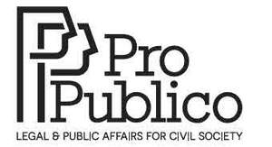

Trade Mark Journal No.2025/015 11 April 2025
UK00004178586 24 March 2025 (35,41,45)
Mark 1
Mark 2

- Class 35
- Business intermediary services relating to the matching of professionals and academics with clients; facilitating connections between professional service providers and clients; business consultancy services; business management and organisation consultancy; business research and surveys; compilation of information for computer databases; organisation of exhibitions and events for commercial and advertising purposes; public relations services; stakeholder mapping and coalition building services; conducting public consultation processes.
- Class 41
- Education and training services, including masterclasses, workshops and seminars on legal and public affairs issues; organising and conducting educational events, including pro bono days, roundtables and hackathons; providing online electronic publications, not downloadable; organising and conducting educational competitions and contests; organising and conducting conferences, including pro bono annual conferences; providing educational information and training on compliance, privacy, ESG (Environmental, Social and Governance), DEI (Diversity, Equity and Inclusion) and other legal and public affairs topics; legal clinics and university contests; pro bono summer academy; secondment programs for educational purposes.
- Class 45
- Legal services, including research and advice on legal questions, drafting and revision of documents, and representation and litigation services; strategic legal advice and litigation; legislative monitoring services; legal consultancy in the field of pro bono services; legal compliance consultancy; legal support services, including pro bono incubator programs to upskill civil society organizations; legal information services; organising and conducting pro bono awards.
Pro Publico ASBL
Representative: Ashurst LLP